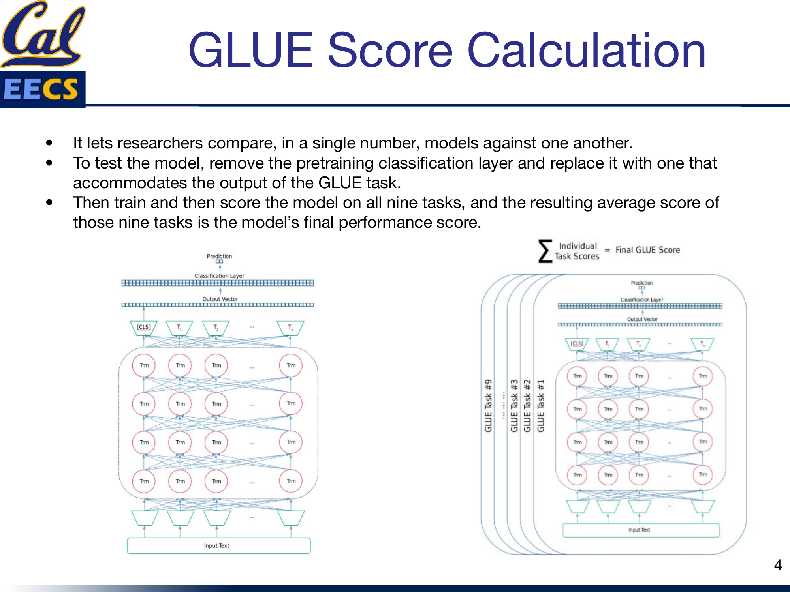

GLUE and SuperGLUE Benchmark
By Hiva Mohammadzadeh | Stanford MSCS · UC Berkeley EECS
Why We Need a Benchmark
Before GLUE existed, comparing language models was a mess. Every paper picked its own tasks, its own datasets, its own metrics. You could not look at two papers and say which model was better at understanding language -- they were measuring different things.
GLUE fixed that. It gave the community a single, standardized evaluation suite that covers a broad range of language understanding capabilities. One number to compare models. One leaderboard to track progress. That matters more than it sounds, because without a shared benchmark, the field cannot measure whether it is actually making progress or just overfitting to individual datasets.
What Is GLUE?
GLUE -- General Language Understanding Evaluation -- is a collection of resources for training, evaluating, and analyzing natural language understanding systems. It bundles together:
- Nine language understanding tasks built on established existing datasets, selected to cover a diverse range of dataset sizes, text genres, and degrees of difficulty.
- A diagnostic dataset designed to evaluate and analyze model performance with respect to a wide range of linguistic phenomena found in natural language.
- A public leaderboard for tracking performance on the benchmark and a dashboard for visualizing the performance of models on the diagnostic set.
- A handcrafted diagnostic test suite that enables detailed linguistic analysis of models.
The tasks span question answering, sentiment analysis, and textual entailment. All tasks are single-sentence or sentence-pair classification, with one exception: STS-B, which is a regression task.
How the GLUE Score Works
The beauty of GLUE is that it lets researchers compare, in a single number, models against one another. Here is how it works:
- Swap the head. Remove the pretraining classification layer from your model and replace it with one that accommodates the output of the GLUE task.
- Fine-tune. Train the model on each of the nine tasks.
- Score. Evaluate the model on all nine tasks.
- Average. The resulting average score of those nine tasks is the model's final GLUE performance score.

Model with Classification Layer on top, Output Vector, stacked transformer blocks (Trm), [CLS] token input at bottom. Individual task scores (CoLA, SST-2, MRPC, ...) summed and averaged to produce Final GLUE Score
The process is the same regardless of the underlying model. BERT, RoBERTa, XLNet -- they all go through this pipeline. That uniformity is what makes the comparison meaningful.
The Nine GLUE Tasks
The nine tasks fall into three categories: single-sentence tasks, similarity and paraphrase tasks, and inference tasks. I will walk through each one with its key numbers and a concrete example so you can see exactly what the model is being asked to do.
Single-Sentence Tasks
These tasks give the model a single sentence and ask it to classify it along some dimension.
CoLA (Corpus of Linguistic Acceptability)
What it tests: Grammatical correctness. Given a sentence, is it linguistically acceptable?
CoLA contains 10,657 sentences drawn from 23 linguistics publications, split into 8,551 train / 1,043 validation / 1,063 test. This is a binary classification task, and it uses Matthews Correlation Coefficient (MCC) as the metric -- not accuracy, because the classes can be imbalanced and MCC handles that better.
Example:
Sentence: "Our friends won't buy this analysis, let alone the next one we propose." Label: 1 (acceptable)
The interesting thing about CoLA is that the sentences come from linguistics papers, so they include deliberately constructed examples that probe subtle grammatical boundaries. This is not just "does the sentence sound right" -- it is testing whether the model has internalized the formal rules of English syntax.
SST-2 (Stanford Sentiment Treebank)
What it tests: Sentiment classification. Is the expressed opinion positive or negative?
SST-2 has 70,042 sentences from movie reviews, split into 67,349 train / 872 validation / 1,822 test. Binary classification, scored by accuracy.
Example:
Sentence: "that loves its characters and communicates something rather beautiful about human nature" Label: 1 (positive)
SST-2 is one of the larger GLUE tasks, and movie reviews give it rich, expressive language. The sentences range from obvious ("this movie is terrible") to nuanced, requiring the model to track sentiment through complex syntactic structures.
Similarity and Paraphrase Tasks
These tasks give the model two sentences and ask whether they mean the same thing, or how similar they are.
MRPC (Microsoft Research Paraphrase Corpus)
What it tests: Semantic equivalence. Are two sentences paraphrases of each other?
MRPC contains 5,800 sentence pairs from online news sources, split into 3,700 train / 1,700 test. Binary classification, scored by accuracy and F1. The dataset is imbalanced -- 68% of pairs are positive (paraphrases) -- which is why F1 matters alongside accuracy.
Example:
Sentence 1: "Automaker sales were up 2.5 percent in the first quarter." Sentence 2: "Sales at automakers rose 2.5 percent in the January-March period." Label: 1 (paraphrase)
This is a great example of what makes paraphrase detection hard. The two sentences say the same thing, but with different words and different syntactic structures. The model has to understand that "first quarter" and "January-March period" are the same concept, and that "were up" and "rose" are semantically equivalent.
QQP (Quora Question Pairs)
What it tests: Question semantic equivalence. Are two questions asking the same thing?
QQP is a large dataset: 795,242 sentence pairs, split into 363,846 train / 40,430 validation / 390,965 test. Binary classification, scored by accuracy and F1. The dataset is imbalanced in the opposite direction from MRPC -- 63% of pairs are negative (not duplicates).
The scale of QQP is notable. With nearly 800K pairs, it is one of the largest GLUE tasks and provides a stress test for how models handle massive training sets. The questions come from Quora, so they cover every topic imaginable and feature the kind of informal, real-world language that carefully curated academic datasets sometimes miss.
STS-B (Semantic Textual Similarity Benchmark)
What it tests: Degree of semantic similarity on a continuous scale from 1 to 5.
STS-B has 8,628 sentence pairs from news headlines, image captions, and NLI data, split into 5,749 train / 1,500 validation / 1,379 test. This is the only regression task in GLUE -- instead of a class label, the model outputs a continuous similarity score. It is evaluated using Pearson and Spearman correlation coefficients.
Example:
Sentence 1: "A plane is taking off." Sentence 2: "An air plane is taking off." Score: 5.000
A score of 5.000 means the sentences are semantically identical. The regression format makes STS-B uniquely challenging among GLUE tasks -- the model cannot just learn a decision boundary. It has to learn a meaningful ordering across a continuous range.
Inference Tasks
These tasks test whether a model can reason about the relationship between two sentences -- typically whether one entails, contradicts, or is neutral with respect to the other.
MNLI (Multi-Genre Natural Language Inference)
What it tests: Textual entailment. Given a premise and a hypothesis, is the relationship entailment, contradiction, or neutral?
MNLI is the largest inference task with 392,702 training pairs drawn from 10 different genres of text. It has two validation sets: matched (9,815 examples from the same genres as training) and mismatched (9,832 examples from different genres). Three-class classification, scored by accuracy on both matched and mismatched sets.
The matched/mismatched split is MNLI's most interesting design choice. It explicitly tests whether models generalize across genres. A model that performs well on matched but poorly on mismatched has overfit to the training distribution -- and MNLI will expose that.
QNLI (Question Natural Language Inference)
What it tests: Whether a sentence contains the answer to a question.
QNLI has approximately 110,000 sentence pairs converted from the Stanford Question Answering Dataset, with about 105,000 train / 5,400 test. The sentences are paired with paragraphs from Wikipedia. Binary classification (entailment or not), scored by accuracy.
QNLI is derived from SQuAD by converting each question-paragraph pair into a set of sentence-level pairs. If a sentence contains the answer to the question, it is labeled as entailment. This reformulation turns an extractive QA task into a sentence-pair classification task, which fits the GLUE format.
RTE (Recognizing Textual Entailment)
What it tests: Whether a hypothesis can be inferred from a premise.
RTE aggregates data from a series of annual textual entailment challenges, with approximately 5,500 sentence pairs (2,500 train / 3,000 test). The text comes from news and Wikipedia. Binary classification (entailment or not), scored by accuracy.
RTE is one of the smaller GLUE tasks, which makes it a test of how well models learn from limited data. Many strong models struggle here precisely because there is not enough training signal to fully adapt the pretrained representations.
WNLI (Winograd Schema Challenge)
What it tests: Pronoun resolution -- determining what a pronoun refers to in context.
WNLI has about 1,000 sentence pairs (634 train / 146 test) drawn from fiction books. The test set is imbalanced, with 65% of examples labeled as not entailment. Scored by accuracy.
WNLI is notoriously difficult and small. Many GLUE submissions actually skip it or report near-chance performance. The pronoun resolution task requires genuine commonsense reasoning -- the kind of reasoning that statistical pattern matching alone often cannot solve.
GLUE Tasks at a Glance
| Task | Category | Classes | Train Size | Metric |
|---|---|---|---|---|
| CoLA | Single-Sentence | 2 | 8,551 | MCC |
| SST-2 | Single-Sentence | 2 | 67,349 | Accuracy |
| MRPC | Similarity/Paraphrase | 2 | 3,700 | Accuracy/F1 |
| QQP | Similarity/Paraphrase | 2 | 363,846 | Accuracy/F1 |
| STS-B | Similarity/Paraphrase | Regression | 5,749 | Pearson/Spearman |
| MNLI | Inference | 3 | 392,702 | Accuracy (matched/mismatched) |
| QNLI | Inference | 2 | ~105,000 | Accuracy |
| RTE | Inference | 2 | 2,500 | Accuracy |
| WNLI | Inference | 2 | 634 | Accuracy |
Enter SuperGLUE
GLUE served its purpose. Then models got too good at it.
When BERT and its successors started approaching or exceeding human-level performance on GLUE, the benchmark lost its ability to differentiate between models. If everyone scores above 89, the leaderboard stops being informative. The field needed a harder test.
SuperGLUE is that harder test. It is a new benchmark upgraded from GLUE with a new set of more difficult language understanding tasks, a software toolkit, and a public leaderboard. The design philosophy is the same -- a standardized suite that produces a single comparable score -- but the tasks are deliberately chosen to be beyond the reach of then-current models.
What SuperGLUE Improved
SuperGLUE was not just "harder GLUE." It made several structural improvements:
- More challenging tasks. SuperGLUE retains the two hardest tasks from GLUE (RTE and the Winograd-style challenge) and adds new tasks selected from an open call for contributions. The bar for inclusion was high -- tasks had to show substantial headroom between BERT-level baselines and human performance.
- More diverse task formats. GLUE is entirely sentence classification and regression. SuperGLUE adds coreference resolution and question answering formats, testing a broader range of model capabilities.
- Comprehensive human baselines. Every SuperGLUE task comes with carefully measured human performance baselines, making it possible to quantify exactly how far models have to go.
- Improved code support. SuperGLUE ships with a new modular toolkit built on PyTorch and AllenNLP, making it easier to run evaluations consistently.
- Refined usage rules. The rules were updated to ensure fair competition and give full credit to the original data and task creators.
The Eight SuperGLUE Tasks
SuperGLUE includes eight tasks. Here is a brief overview of each:
BoolQ -- Yes/no question answering. Given a passage and a question, answer yes or no. Contains 15,942 examples (9,427 train / 3,270 validation / 3,245 test) sourced from Google search queries paired with Wikipedia passages. Scored by accuracy.
CB (CommitmentBank) -- Natural language inference focused on the degree of commitment a speaker has to a clause. A small but challenging dataset with 557 examples (250 train / 57 validation / 250 test). Scored by accuracy and F1.
COPA (Choice of Plausible Alternatives) -- Causal reasoning. Given a premise, choose which of two alternatives is the more plausible cause or effect. Contains 1,000 examples (400 train / 100 validation / 500 test) from blogs and a photography encyclopedia. Scored by accuracy.
MultiRC -- Multi-sentence reading comprehension. Given a passage and a question, select all correct answers from a set of candidates. This tests whether models can synthesize information across multiple sentences.
ReCoRD -- Reading comprehension with commonsense reasoning. The model must fill in a missing entity in a passage summary, requiring both passage understanding and world knowledge.
RTE -- Retained from GLUE. Same textual entailment task, same format. Its inclusion in both benchmarks underscores how difficult it remains.
WiC (Word-in-Context) -- Word sense disambiguation. Given a word used in two different sentences, determine whether it has the same meaning in both. This isolates a fundamental challenge in NLP: the same word can mean completely different things depending on context.
WSC (Winograd Schema Challenge) -- Pronoun coreference resolution. An upgraded version of GLUE's WNLI, reframed as a coreference task. The model must determine which noun a pronoun refers to, requiring commonsense reasoning about the described situation.
Key Takeaways
Here is what I want you to walk away with:
- Benchmarks exist to make progress measurable. Before GLUE, comparing language models was subjective and inconsistent. GLUE gave the field a common yardstick, and SuperGLUE raised the bar when that yardstick was no longer discriminative.
- The GLUE score is a single number, but it summarizes nine very different capabilities. Grammar checking, sentiment analysis, paraphrase detection, textual entailment, pronoun resolution -- each task tests something distinct. A high GLUE score means the model is good at language understanding broadly, not just at one narrow skill.
- Task diversity matters. GLUE deliberately spans different dataset sizes (from 634 to 392,702 training examples), different text genres (news, fiction, movie reviews, Quora questions), and different difficulty levels. A model that only works on large datasets or easy tasks will not score well.
- When models saturate a benchmark, you need a harder one. This is the entire reason SuperGLUE exists. Progress on GLUE plateaued not because language understanding was solved, but because the tasks were no longer hard enough to differentiate top models.
- Small datasets are the real test. RTE, WNLI, MRPC, and CoLA are all relatively small. They test whether a pretrained model can transfer its knowledge to settings with limited fine-tuning data -- which is often the realistic scenario in practice.
- SuperGLUE is not just harder tasks -- it is better methodology. Comprehensive human baselines, diverse task formats, and refined evaluation rules make it a more rigorous benchmark, not just a more difficult one.
The trajectory from GLUE to SuperGLUE is a template for how the field evolves. Build a benchmark, push models until they saturate it, identify the gaps, build a harder benchmark. The tasks change but the principle stays the same: if you cannot measure it, you cannot improve it.